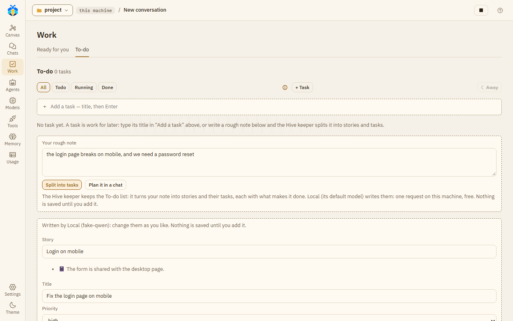
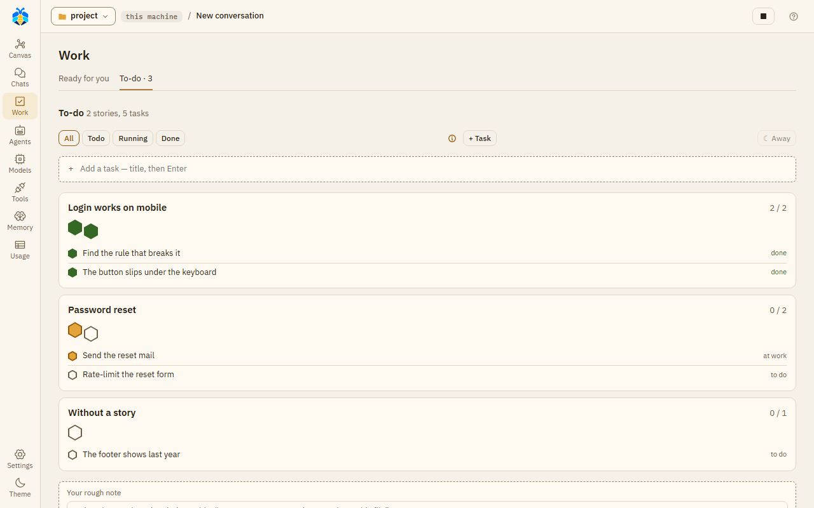
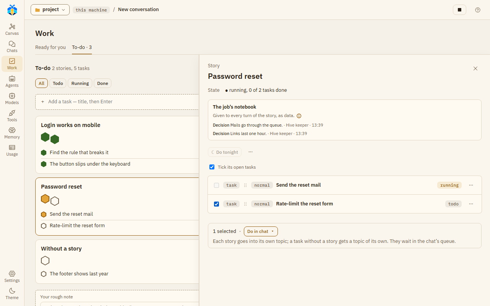
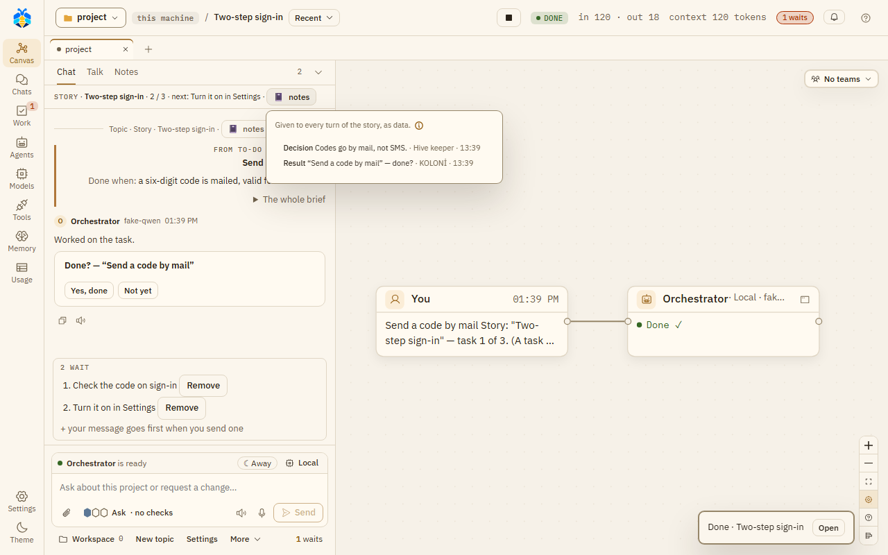
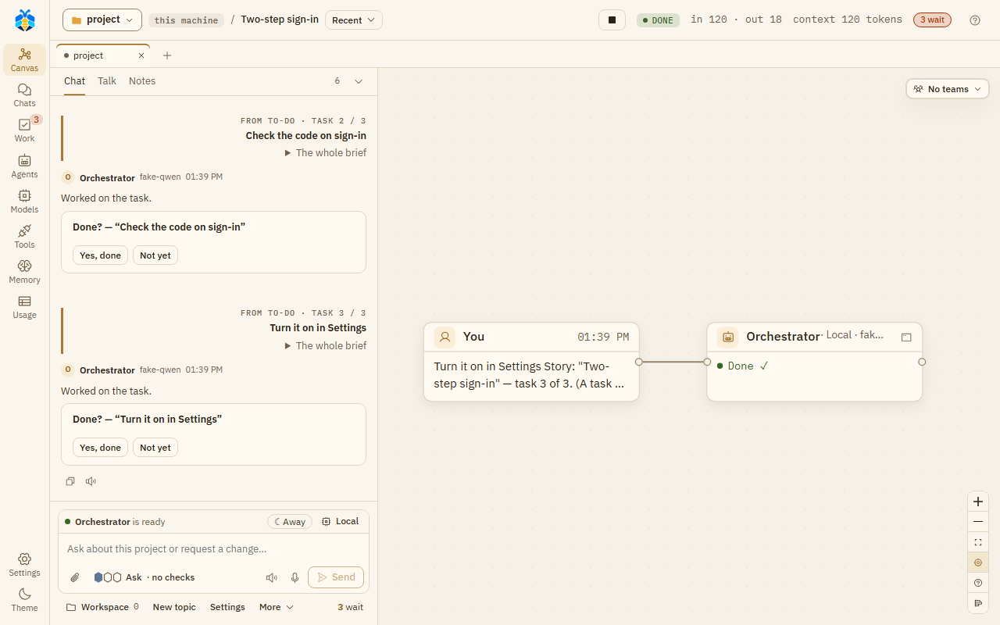

To-do¶
To-do holds a project's tasks, in your order: a story holds the tasks and bugs that go on together (see Stories). Ticked tasks run in a chat you give them to, one by one; you decide when each is done (see Doing tasks in a chat).
Since 0.1.10 To-do is a tab of the Work page, beside Ready for you - what was done and what waits for your word - so the morning's report, the decisions that wait and your tasks are in one place. Open Work on the left rail and its To-do tab ("To-do · 5": the tasks not done yet); Work opens on the tab you showed last. Ctrl+K's Work › To-do, a chat's Open it in To-do, a To-do row of Decided for you and the canvas's To-do → open the To-do tab - at that task, where one is named.
Its bar has the filters All, Todo, Running and Done, + Task (to the line where a task is added) and ☾ Away. ☾ Away opens the Away panel of the chat you have open, when it is a chat of this project that has had a turn (see Work while you're away).
Adding tasks¶
Type in Add a task — title, then Enter. Once there is a title you can also set its Priority (high, normal, low), a Detail, Done when (optional), its Story (none, one of the project's, or New story…, named there) and its Type (task or bug), then press Add task.
A rough note can become stories and their tasks. Under the cards, type it in Your rough note, for example "the login page is broken on mobile, and we need a password reset", and press Split into tasks: the Hive keeper - the role that keeps the To-do list - splits it. A model writes it the way that role would: tasks that go on together as a story, and each task with a title, detail, done when, priority and whether it is a task or a bug. A story may come with a few notes for its notebook. A small note stays a single story or a single task; at most 4 stories and 12 tasks in all. It is asked once, with no tools, as Or write it asks (see Recipes) - your fast models first, then the other tiers', then the Orchestrator's model in the chat you are in, then your newest chat's. One that does not answer passes it on in the same press; with none answering, the message names each one asked and why, and how to fix it. The line under the buttons says which model is asked first and whether the request costs money.
The draft appears under the box for you to change: each story's title and tasks, and the tasks that stand alone. A story's Add adds that story; ✕ drops a task; Add all adds the rest. The tasks are yours and to do, as if you had typed them. Nothing is saved until you add it. Plan it in a chat works the other way: it opens a chat in the project whose first message asks for the Hive keeper. The Hive keeper reads the project and proposes tasks, which wait for you like any agent's.

A rough note split into two stories and three tasks by Split into tasks; nothing is saved until you add it.
Agents with the To-do tools (the Hive keeper and the Scout) can propose tasks and changes. A task an agent proposes may name its story: one of the project's open stories by its title, or a new one that shows on the list once you add one of its tasks. Its card says where adding it puts it - In story “Login” (new) · bug, "(new)" where the agent's proposal opened the story. Once you add one of its tasks, the story is yours: it stays though its tasks go. A story an agent opened goes when you reject all its tasks. They wait for you under Waiting for your word, on Work's Ready for you tab, with everything else that waits:
| What waits | Buttons |
|---|---|
| A new task an agent proposed | Add to To-do / Edit / Not wanted |
| A task an agent thinks is done ("done?") | Done / Not yet |
| A change an agent proposed | Change / Reject |
When several new tasks wait, Approve all adds them all. Edit opens the task's title and detail; change them, then press Add to To-do.
Follow-up tasks¶
After a turn in one of the project's chats, the Scout - the role that looks for what is left
after each turn - suggests what to do next. It looks at
the turn's record: work left undone or for later, a TODO, a step that failed. It proposes at most
three tasks, each with the words they came from ("Proposed by the Scout, from: ..."). Those
words must be an agent's in that turn, or the first line of a step that failed, not your message.
Backticks, * and _ are ignored, and curly quotes count as straight ones, so `CHANGELOG.md`
still matches CHANGELOG.md. A suggestion without
such words is dropped. So is one that looks like a task already on the list, or one you rejected
before. Each one dropped is written, with why, to runtime/logs/koloni.log, and shows in the
Inspector of its canvas box (below). The
suggestions wait under Waiting for your word like any agent's. An added task runs once you give it to a
chat (Doing tasks in a chat). A suggestion whose words look like
they try to give the agent orders says so on its row.
It is one small model request, with no tools, after each turn that did something: changed a file, ran a command, handed work to a sub-agent or had a step fail. A turn that only answered asks nothing. It is made once the turn is over, so your next message does not wait for it. It goes to the first model of the fast tier, or of the tier you chose. It skips a provider that is down, at its limit, out of its plan, or whose pay-per-token use you refused in that turn. With no such model nothing is suggested. The model is sent what was said in the turn, the files it changed, the steps that failed and the open tasks' titles. The secrets KOLONİ knows, and the variables the project passes to its commands, are masked. Jobs while you're away and To-do tasks' turns get suggestions too; discussions get none. Nothing is asked while the project is over its monthly budget.
After a turn of a story - one of its tasks' turns, or yours in its topic - a suggestion goes into that story, while the story is open; after any other turn it stands alone, in no story. One that comes from the first line of a step that failed is a bug, any other a task: KOLONİ tells them apart by the words a suggestion came from, not by what the Scout says.
Each request shows on the canvas as a Scout box under the turn, on a dashed line down from the Orchestrator: the model, "2 proposed · 1 dropped" (at Full auto also "Orchestrator added 1"), its tokens ("–" where not reported), and To-do →. Click it to see why each suggestion was dropped; a double click, or To-do →, opens Work's To-do tab. A request that failed or timed out says "Sent, not heard out". A turn where it was not asked has no such box.
At Full auto, in a turn you started, you are not asked. The Orchestrator's model decides each suggestion, add or reject, with one more request, and says why in one sentence. You see its word under Decided for you on Work's Ready for you tab. OK keeps it; Change undoes it while the task is still todo. A task it added cannot be given to a chat until you press OK there. One it rejected stays on To-do, folded under Rejected by the Orchestrator, with Add. It is not asked when the provider has no room left on its plan. Nor is it asked when the Orchestrator runs on a CLI and the project does not let it answer while you're away. It never adds a suggestion whose words look like orders. Suggestions from jobs while you're away always wait for you.
Turn it off, or choose the tier, in Settings › This project › How agents work.
Stories¶
Each story is a card, in the stories' order: its name, how many of its tasks are done ("3 / 4"), a cell for each task in a row of honeycomb, and its tasks, each with its cell and how it stands - done, at work, done?, waits for Take in, push waits for you, stuck, queued, to do. The tasks of no story are one more card, Without a story, last. What the cells mean is said under the cards. (Since 0.1.10 there is no goal level over the stories. A goal made before stays in the database, and its stories stand at the top like any other.)
A card opens its story in a panel over To-do (the whole window on a narrow screen): its Night branch, where a night's job of it worked on one (the story's own branch is not shown there yet), the Chat it runs in, its State; its notebook, each note with who wrote it and when; its buttons; and its tasks, each with all it can do (below). Close (✕) or Esc shuts it, and you are back on its card; Esc in a form in it closes the form first. While it is open, what it lies over cannot be reached; on a narrow screen it is a dialog over the whole page, Tab going round within it.
- A story is tasks and bugs that go on together. Its state comes from its tasks: ○ todo (none started), ● running (one at work), ⚠ stuck (one stuck), done? (every task done, or waiting at "done?" for your word) and ✓ done. A story is done only when you close it: Close story in its panel, once each of its tasks is done; Open it again undoes it. Its notebook says what was decided, the files touched, the results and the questions left - read as notes, never as orders.
- Its panel's buttons: Continue in chat opens the chat it runs in, where it has one; ☾ Do tonight opens the Away panel with its tasks to do ticked first; Close story; and ⋯ with Rename and Delete. Deleting a story keeps its tasks: they lose their story.
- A task is work to do; a bug is something that works wrong, its tag in rose. ⋯ → Edit sets a task's Story and Type; None takes it out of its story. Dragging moves a task within its story only.
- A story's name is one in its project, whatever its case: agents name a story by it, so "Login" and "LOGIN" would leave which one they mean to chance. The Turkish İ and ı count as an i: "LOGİN" and "logın" are "login" too, and so is the "logi̇n" that lowercasing "LOGİN" gives (an i with a dot above of its own); so does a name in another Unicode form, with a character nobody sees in it, or with two spaces or a tab where the page shows one space. A name another story has, open or closed, is refused; an agent naming a closed story is told so. A name of what nobody sees alone - a zero-width space, a braille blank - is refused too: "a story needs a name you can see". Two open stories made before 0.1.9 whose names are now one ("Batch Alpha" and "Batch Alpha") both stay: an agent naming one gets the story of exactly that name, and where neither is, it is told both names and asked for the exact one.
The filters on the bar show All, what is Todo (to do, or stuck), what is Running (at work, or done? and waiting for your word - a story at done? too) or what is Done (a story only once you closed it). A story whose tasks are all filtered out still shows when its own state fits.

To-do's cards, on Work's To-do tab.

A story's panel: its notebook, its buttons and its tasks.
The job's notebook¶
Each story keeps a short notebook: in its panel on To-do, and 📓 notes on the strip over a chat the story works in. A task of no story keeps its own (since 0.1.10): a task done in a chat, and a night's job, with 📓 N notes beside the task. It is the job's notebook, for as long as the job runs: what its next turns go on from. Each note is one line - a decision, a file, a result, a question or a note - with who wrote it:
- KOLONİ notes how each turn of the story's tasks ended - “Add the reset mail” — done?, — stuck: … or — not finished: … - and the files that turn changed in the project, five at most.
- The task's Orchestrator is asked to end its answer with up to three lines
Story note: <decision|file|result|question>: <one line>(Task note: …for a task of no story); KOLONİ reads them off its answer. A note is a line that starts so, at the very start of the line: before it only up to three spaces, a list's-,*or+, bold, or backticks roundStory note:alone; a numbered list's item (1. Story note: …) is not one. One in a code block, a quote, a table, a heading, inline code, an HTML comment or an HTML block (<pre>,<script>… to its closing tag;<div>,<table>… to a blank line) is not, nor is a line right after a quote's with no blank line between: Markdown reads it as the quote's too. - The Hive keeper adds its notes as it drafts a story.
- A note left for the whole turn on the chat's shared notebook - the
Notes tab - goes in too: yours, and an agent's
post_note, at most three of the agents' a turn (a team's note to its own team stays the turn's). The agent is told whether it went in.

The strip over a chat a story works in, and its notebook opened from it.
Every turn of the job is given the notebook, quoted as data, not instructions - each line saying whose it
is: KOLONİ's, an agent's or yours, so an agent's note never passes for your word: each task's first message
and its fix round carry it, and so do the Orchestrator's instructions in a turn of yours in the story's
(or the task's) topic, as the notebook stood when that turn began. Any agent of the turn reads it with
read_notes; in place of the notebook of the turn before, which a turn of a plain chat is given. Once
the job is over - its task done, its story closed - a turn in its topic is a plain chat's again. What a
search of earlier messages finds (Search deeper, an agent's Recall) never includes a notebook a
task's message carried. A session that summarises itself keeps short notes
it was given and loses details read in passing (in one measured run, 5 of 5 notes against 0 of 5 details
buried in a long log): the notebook is what is not lost. Long content - a file, an output - is read
again when it is needed.
What agents write there goes to models at every turn, so KOLONİ holds it to a few rules: the secrets
KOLONİ knows, and the variables the project passes to its commands, are masked, and a word next to a
character nobody sees - a zero-width space, a joiner, a braille blank - is hidden whole (***), so a
secret split by one is not kept in parts (an emoji family, an emoji with a hidden variant mark such as
⚠️, or a Persian word joined by one shows as *** too, and so does a word another mask already cut
into); a line that reads like orders is left out (in runtime/logs/koloni.log) - and so is a line
with a zero-width character between two plain letters (a-z, A-Z), whole: it reads like orders
hidden from the eye; each note is one line of at most 200 characters, and the newest 20 are kept. Notes kept before these rules are checked again as they are
given. Masking knows a secret by its own characters: one split by a space or a line's end, or written
with look-alike letters, is not found.
Your tasks¶
In a story's panel, tasks are listed by priority, then in your order. Drag a task, or use ⋯ → move up / move down. The ⋯ menu also has Edit, Waits for ("it starts once these are done") and Delete.
A task's state shows as a tag, such as queued, running, "needs you", "needs you · Take in", stuck, or done.
Doing tasks in a chat¶
Open a story and tick the tasks you want done - Tick its open tasks ticks them all - and the bar under them says "N selected · Do in chat ▾". Ticks stay while you open another card: tasks of two stories go to a chat together. Its menu gives them to This chat - "…" (the chat you have open, when it is a chat of this project) or to A new chat, named by the first of them. "Each story goes into its own topic; a task without a story gets a topic of its own. They wait in the chat's queue." KOLONİ checks your ticks as they stand when you press it: a task done meanwhile, one waiting in another chat's queue, a proposal, one the Orchestrator added for you that waits for your OK, a night's job or a task of another project is refused, and so is a story's task while another task of that story waits or works in another chat ("do the story there") - then nothing is queued. Over the project's monthly budget nothing is queued either.

A story given to a new chat: each task as itself, and "Done?" under it.
The chat runs them one by one. Above its message box, N wait lists the queue - the task at work "· running", each waiting one with Remove (back to To-do) - and "+ your message goes first when you send one": a message of yours goes before the next task, and goes on in the topic you were last in. A task that waits for others (⋯ → Waits for) is passed over until they are done; the next ready task goes first.
A task's turn is an ordinary turn of that chat: at the chat's level, on the chat's model (Claude Code and the other CLIs included), and what needs your word asks on its cards there. Its first message is the task - in the chat as From To-do · task 2 / 3, its title and what makes it done, the whole brief folded under. A story's tasks go on in one topic - a line Topic · Story · … · 📓 notes over it, its 📓 a button that opens the story's notebook once the notebook has a note - so the Orchestrator and a CLI that goes on in its session remember the task before; after a task that ended badly, or a day later, the story's next task starts in a new topic, told the story so far (A story's session). A task of no story has a topic of its own; given to a chat again, it starts in a new one - only a fix round, or a turn Stop everything cut, goes on in the topic it had.
"A task not finished gets one fix round; still not, it is stuck and the next goes on." Under a task's last turn the chat asks:
- Done? - "…", with the Scout's view if a fast model wrote one: Yes, done or Not yet (back to To-do).
- Stuck - "…", with why: Fix it (one more round in its topic), Open it in To-do, or Leave it (the card folds to one line).
- Story done? - "…", once every task of a story is done: Close the story or Add a task (it joins the story and this chat's queue).
A task's turn works as long as it makes progress. Once nothing has moved for Settings › The app › More limits › Stuck after this many minutes with no progress (30 unless you change it) - no file of the turn changed, no agent finished its work, no failing command passed - it stops, its work kept, and counts as not finished: its fix round comes, then it is stuck and the next task goes on. The same happens, as a last resort, after An unattended turn runs at most (hours) (8 unless you change it; empty: no limit). A task's turn also waits for its checks before it ends, so a check that failed gives it its fix round.
Stop on a task's turn, a restart of KOLONİ, the project's monthly budget, a task's turn stopped by the project's token limit or its provider's limit, or archiving the chat stops the queue: the task and those waiting go back to To-do, and one line in the chat says why ("The To-do queue stopped: …"). Stop everything and ☾ Away only hold it: the stopped task goes back to the head of the queue, and Resume - or your coming back - goes on.
A story's session¶
A story's tasks go on in one topic of the chat they run in: its Orchestrator sees the turns of the task before, and on Claude Code goes on in the same session. The next task starts a new topic of the story - a new session - instead where:
- a task of it got stuck, or went back to To-do (Not yet, Stop), so its wrong guess is not carried on - that task too, given to the chat again, starts there. A turn Stop everything cut is held, not judged: at Resume it goes on in its topic;
- a day has passed since its last turn there.
A session's size starts no new topic: Claude Code compacts its own session, and Copilot's and Codex's are bound by KOLONİ already, at 75% (by default) of their window (Going on from the last turn).
The first task in the new topic is told the story so far - KOLONİ's own record of each earlier task and how it stands, and the files their turns changed - with the notebook. This is decided as each task starts: a Not yet on a task while the next one works moves only the ones after it. Any turn's Orchestrator is told the names of the chat's other topics, with how a story's or a To-do task's stands: (done), (done?) or (stuck).
A story's branch¶
In a project that is a git repository, a story's tasks run on the story's own branch
(koloni/<its name>-<4 characters of its id>), one after another - each turn in a worktree of it, so nothing of the story is in your project until you close
it. Close the story runs KOLONİ's check on the branch - the tests its tasks wrote: it passes, the branch
is merged into yours, or sent as a pull request where the project's finished work goes so
(Branches); it fails, the branch waits and the story's last task
is stuck with why - Fix it goes on on the branch, then close it again. It goes in by itself only at
Full auto, or where its check ran and passed; below that, a branch nothing tested waits on its Merge
(or pull request) card in the chat, and Discard there keeps the branch and the story open. A branch
holding a secret KOLONİ knows is held too, its last task stuck with why (KOLONİ looks at the files as the branch ends; a pull request sends its whole history, so a secret committed and removed on it still goes up). Where the branch cannot be opened -
your folder on no branch, or on the story's branch itself - nothing goes in and the story stays open; only a
branch deleted from git counts as gone. A chat holding a story's branch is not deleted until the story is
closed or deleted; a deleted story's branch stays in git, and its chat says so. A task added to a closed
story opens it again. A message of your own in the story's topic works in the project, not on the
story's branch. A task of no story has a small
branch of its own, merged at the end of its turn as a team's branch is (at Ask before changes, on a card).
A project with no git has no branch: the tasks work in the project, agents holding the files they change
as in any chat. Where the chat's Orchestrator is a CLI that works with its own tools in the project, its
tasks work in the project too.